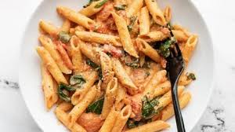

Pizza

Pizza (Italian: [ˈpittsa], Neapolitan: [ˈpittsə]) is a savory dish of Italian origin consisting of a usually round, flattened base of leavened wheat-based dough topped with tomatoes, cheese, and often various other ingredients (such as anchovies, mushrooms, onions, olives, pineapple, meat, etc.), which is then baked at a high temperature, traditionally in a wood-fired oven.[1] A small pizza is sometimes called a pizzetta. A person who makes pizza is known as a
Pastry
.jpeg)
Pastry refers to a variety of doughs, as well as the sweet and savoury baked goods made from them. These goods are often called pastries as a synecdoche, and the dough may be accordingly called pastry dough for clarity. Sweetened pastries are often described as bakers' confectionery
Pasta

Pasta (UK: /ˈpæstə/, US: /ˈpɑːstə/, Italian: [ˈpasta]) is a type of food typically made from an unleavened dough of wheat flour mixed with water or eggs, and formed into sheets or other shapes, then cooked by boiling or baking. Pasta was traditionally only made with durum, although the definition has been expanded to include alternatives for a gluten-free diet, such as rice flour, or legumes such as beans or lentils. While Asian noodles originated in China, pasta is believed to have developed independently in Italy and is a staple food of Italian cuisine,[1][2] with evidence of Etruscans making pasta as early as 400 BCE in Italy